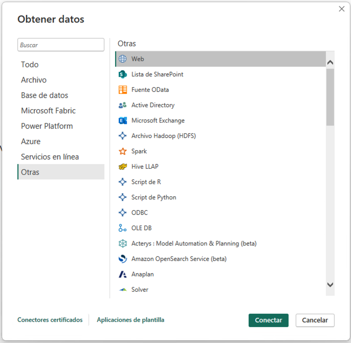
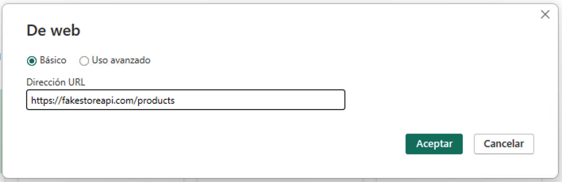
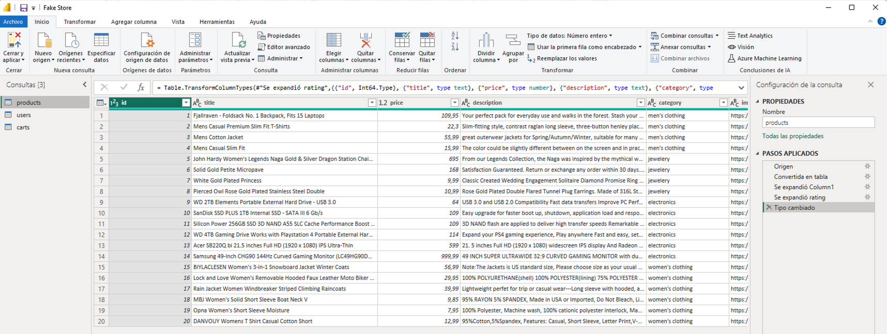
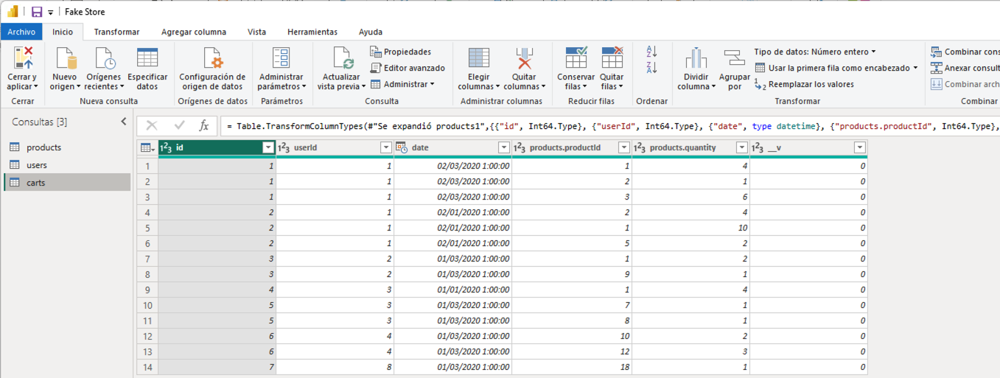
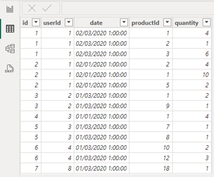
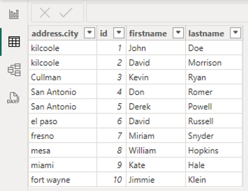

Resumen
En este tutorial se describe cómo realizar transformaciones básicas de datos con Power BI. Power BI es una herramienta de análisis de datos que permite conectar a diferentes fuentes de datos, transformar los datos y visualizarlos. Power BI cuenta con una herramienta llamada Power Query que permite realizar transformaciones de datos de forma sencilla. En este tutorial se describe cómo realizar transformaciones básicas de datos con Power Query. En particular se describirán transformaciones sobre columnas (eliminación, cambios de nombre, transformaciones básicas sobre el contenido y transformación de modelos a lo ancho a modelos a lo largo), creación de medidas y columnas calculadas y creación de relaciones entre tablas.
1. Introducción
Uno de los procesos más comunes en el análisis de datos es la transformación de los mismos. En este tutorial vamos a ver cómo realizar transformaciones básicas de datos con Power BI. Power BI es una herramienta de análisis de datos que permite conectar a diferentes fuentes de datos, transformar los datos y visualizarlos. Power BI cuenta con una herramienta llamada Power Query que permite realizar transformaciones de datos de forma sencilla. En este tutorial vamos a ver cómo realizar transformaciones básicas de datos con Power Query. Para ello, vamos a utilizar como fuente de datos una API de datos abiertos de ejemplo de una plataforma de comercio electrónico con datos ficticios (Fake Store API).
2. Caso de estudio. Creación de un cuadro de mandos para Fake Store API
Fake Store API es una API de datos abiertos de ejemplo de una plataforma de comercio electrónico con datos ficticios. Esta API proporciona datos de productos, usuarios y pedidos. En este tutorial vamos a crear un informe con Power BI que permita analizar los datos de productos, clientes y sus valoraciones. Para ello, previamente habrá que realizar una serie de transformaciones de los datos, crear un modelo de datos, para finalizar creando un informe con visualizaciones que permitan analizar los datos.
2.1. Descripción de la API
La API de Fake Store proporciona una serie de endpoints que permiten obtener datos de productos, usuarios y pedidos. Permite obtener tanto listas de productos, usuarios y pedidos como obtener un producto, usuario o pedido por su id. En este tutorial nos centraremos únicamente en los endpoints que recuperan las listas completas de productos, usuarios y pedidos. Los endpoints que vamos a utilizar son los siguientes:
-
/products: Devuelve una lista de productos. -
/users: Devuelve una lista de usuarios. -
/carts: Devuelve una lista de pedidos (realmente, sesiones de compra).
Los endpoints devuelven los datos en formato JSON. A continuación se muestra un ejemplo de los datos que devuelve cada endpoint.
2.1.1. Endpoint /products
El endpoint /products devuelve una lista de productos. Cada producto tiene un identificador, un título, un precio, una descripción, una categoría, una imagen y una valoración. La valoración es un objeto que contiene la puntuación media y el número de valoraciones. A continuación se muestra un ejemplo de los datos que devuelve el endpoint /products.
[
{
"id": 1,
"title": "Fjallraven - Foldsack No. 1 Backpack, Fits 15 Laptops",
"price": 109.95,
"description": "Your perfect pack for everyday use and walks in the forest. Stash your laptop (up to 15 inches) in the padded sleeve, your everyday",
"category": "men's clothing",
"image": "https://fakestoreapi.com/img/81fPKd-2AYL._AC_SL1500_.jpg",
"rating": {
"rate": 3.9,
"count": 120
}
},
{
"id": 2,
"title": "Mens Casual Premium Slim Fit T-Shirts ",
"price": 22.3,
"description": "Slim-fitting style, contrast raglan long sleeve, three-button henley placket, light weight & soft fabric for breathable and comfortable wearing. And Solid stitched shirts with round neck made for durability and a great fit for casual fashion wear and diehard baseball fans. The Henley style round neckline includes a three-button placket.",
"category": "men's clothing",
"image": "https://fakestoreapi.com/img/71-3HjGNDUL._AC_SY879._SX._UX._SY._UY_.jpg",
"rating": {
"rate": 4.1,
"count": 259
}
},
...
]2.1.2. Endpoint /users
El endpoint /users devuelve una lista de usuarios. Cada usuario tiene un identificador, un nombre, un email, un username, una dirección y un teléfono. La dirección es un objeto que contiene la calle, el número, la ciudad, el código postal y la geolocalización. El nombre es un objeto que contiene el nombre y los apellidos.
A continuación se muestra un ejemplo de los datos que devuelve el endpoint /users.
[
{
"address": {
"geolocation": {
"lat": "-37.3159",
"long": "81.1496"
},
"city": "kilcoole",
"street": "new road",
"number": 7682,
"zipcode": "12926-3874"
},
"id": 1,
"email": "john@gmail.com",
"username": "johnd",
"password": "m38rmF$",
"name": {
"firstname": "john",
"lastname": "doe"
},
"phone": "1-570-236-7033",
"__v": 0
},
...
]2.1.3. Endpoint /carts
El endpoint /carts devuelve una lista de pedidos, o mejor dicho, sesiones de compra. Cada pedido tiene un identificador, un usuario, una fecha y una lista de productos. El usuario se corresponde con el identificador del usuario que ha realizado el pedido. La lista de productos es una lista de objetos que contiene el identificador del producto y la cantidad de unidades compradas. A continuación se muestra un ejemplo de los datos que devuelve el endpoint /carts.
[
{
"id": 1,
"userId": 1,
"date": "2020-03-02T00:00:00.000Z",
"products": [
{
"productId": 1,
"quantity": 4
},
{
"productId": 2,
"quantity": 1
},
{
"productId": 3,
"quantity": 6
}
],
"__v": 0
},
{
"id": 2,
"userId": 1,
"date": "2020-01-02T00:00:00.000Z",
"products": [
{
"productId": 2,
"quantity": 4
},
{
"productId": 1,
"quantity": 10
},
{
"productId": 5,
"quantity": 2
}
],
"__v": 0
},
...
]3. Extracción de datos y transformación con Power Query
Para extraer los datos de la API de Fake Store y realizar las transformaciones necesarias vamos a utilizar Power BI. Una de las fuentes de datos que pueden usarse en Power BI es una API REST. Para ello, vamos a utilizar la funcionalidad de Power BI que permite conectarse a una API REST y extraer los datos. Además, Power BI cuenta con una herramienta llamada Power Query que permite realizar transformaciones de datos de forma sencilla.
3.1. Conexión a la API de Fake Store
Para conectarnos a la API de Fake Store y extraer los datos vamos a seguir los siguientes pasos:
-
En el menú
Iniciode Power BI, seleccionarObtener datosy despuésWeb.NoteLa categoría
Webpermite conectarse a una URL y extraer los datos de la página web. Si no está disponible la categoríaWeb, se seleccionaMás. Aparece un cuadro de diálogo en el que se selecciona la categoríaOtrasy seleccionarWeb. El cuadro de diálogo muestra la gran cantidad de fuentes de datos a las que se puede conectar Power BI. -
En el cuadro de diálogo
De web, introducir la URL de la API de Fake Store para la recuperación de productoshttps://fakestoreapi.com/products. SeleccionarAceptar. -
Aparece una vista previa de los datos que se pueden extraer. Esta ventana es Power Query. Seleccionar
Cerrar y aplicar. Esto importa los datos en Power BI creando una tabla con los datos de los productos. La tabla está disponible en el panelVista de datosy en laVista de modelo.NoteEn el proceso de la importación de datos se podría haber realizado alguna transformación de los datos en la ventana de Power Query. En este caso, no se ha realizado ninguna transformación. Las realizaremos todas juntas más adelante.
-
Repetir los pasos 1 a 3 para los endpoints
/usersy/carts. Las URLs de los endpoints son las siguientes:-
/users:https://fakestoreapi.com/users -
/carts:https://fakestoreapi.com/carts
-
Tras realizar estos pasos, se habrán importado los datos de los productos, usuarios y pedidos en Power BI. La figura siguiente ilustra las tablas importadas en Power BI disponibles en el panel Vista de modelo.
3.2. Transformación de los datos
Una vez importados los datos en Power BI, vamos a realizar una serie de transformaciones para preparar los datos para el análisis. Las transformaciones que vamos a realizar son las siguientes:
-
Modificar la tabla de productos eliminando las columnas de imagen y descripción.
-
Modificar la tabla de pedidos para eliminar la versión y cambiar los nombres de las columnas
products.productIdyproducts.quantityporproductIdyquantityrespectivamente. -
Modificar la tabla de usuarios eliminando las columnas de geolocalización, calle, número, zip, email, username, password, teléfono y versión. Además, cambiar el nombre de la columna
name.firstnameporfirstname, la columnaname.lastnameporlastnamey transformaremos las columnas defirstnameylastnamepara que muestren los datos en formato camel case.
3.2.1. Modificar la tabla de productos
Para modificar la tabla de productos y eliminar las columnas de imagen y descripción vamos a seguir los siguientes pasos:
-
Abrir Power Query haciendo clic en el botón
Transformar datos. Aparecerá Power Query con las tres tablas importadas. La figura siguiente muestra Power Query con las tablas y mostrando el contenido de la tabla de productos. -
Seleccionar las columnas
imageydescriptionhaciendo clic en el nombre de la columna y después enQuitar columnas. Se añadirá un nuevo paso en el panel dePasos aplicadosque indica que se han eliminado las columnas.NoteSi se ha realizado un paso incorrecto en Power Query, se puede deshacer el paso eliminándolo del panel de
Pasos aplicados. -
Seleccionar
Cerrar y aplicarpara aplicar los cambios y volver a Power BI. -
Comprobar que la tabla de productos ha quedado como se necesitaba mostrándola en la
Vista de datos.
3.2.2. Modificar la tabla de pedidos
Para modificar la tabla de pedidos y eliminar la versión y cambiar los nombres de las columnas products.productId y products.quantity por productId y quantity respectivamente vamos a seguir los siguientes pasos:
-
Abrir Power Query haciendo clic en el botón
Transformar datos. -
Seleccionar la tabla de pedidos haciendo clic en la tabla. Aparecerá el contenido de la tabla en Power Query. La figura siguiente muestra Power Query con las tablas y mostrando el contenido de la tabla de pedidos.
NoteDe forma predeterminada, cuando Power Query se encuentra con un campo que es un objeto, si es un objeto sencillo con un número de campos fijo, Power BI crea una columna para cada campo del objeto añadiéndole el nombre del campo padre como prefijo. En este caso, como el objeto JSON del endpoint tiene un campo
productsque es un objeto con dos camposproductIdyquantity, Power BI ha creado dos columnas para estos campos con los nombresproducts.productIdyproducts.quantity. Si el objeto es una lista de objetos, Power BI crea una fila por cada objeto de la lista. -
Seleccionar la columna
vhaciendo clic en el nombre de la columna y después enQuitar columnas. Se añadirá un nuevo paso en el panel dePasos aplicadosque indica que se ha eliminado la columnav. -
Hacer clic con el botón derecho sobre la columna
products.productidy seleccionarCambiar nombre. Cambiar el nombre de la columna aproductId. Repetir el proceso para la columnaproducts.quantitycambiando el nombre aquantity. Se añadirán dos nuevos pasos en el panel dePasos aplicadosque indican que se han cambiado los nombres de las columnas. -
Seleccionar
Cerrar y aplicarpara aplicar los cambios y volver a Power BI. -
Comprobar que la tabla de pedidos ha quedado como se necesitaba mostrándola en la
Vista de datos.
3.2.3. Modificar la tabla de usuarios
Para modificar la tabla de usuarios y eliminar las columnas de geolocalización, calle, número, zip, email, username, password, teléfono y versión, cambiar el nombre de la columna name.firstname por firstname, la columna name.lastname por lastname y transformar las columnas de firstname y lastname para que muestren los datos en formato camel case vamos a seguir los siguientes pasos:
-
Abrir Power Query haciendo clic en el botón
Transformar datos. -
Seleccionar la tabla de usuarios haciendo clic en la tabla. Aparecerá el contenido de la tabla en Power Query. La figura siguiente muestra Power Query con las tablas y mostrando el contenido de la tabla de usuarios.

-
Seleccionar las columnas
address.geolocation,address.street,address.number,address.zipcode,email,username,password,phoney__vhaciendo clic en el nombre de la columna y después enQuitar columnas. Se añadirá un nuevo paso en el panel dePasos aplicadosque indica que se han eliminado las columnas. -
Hacer clic con el botón derecho sobre la columna
name.firstnamey seleccionarCambiar nombre. Cambiar el nombre de la columna afirstname. Repetir el proceso para la columnaname.lastnamecambiando el nombre alastname. Se añadirán dos nuevos pasos en el panel dePasos aplicadosque indican que se han cambiado los nombres de las columnas. -
Hacer clic con el botón derecho sobre la columna
firstnamey seleccionarTransformary despuésPoner En Mayúsculas Cada Palabra. Se añadirá un nuevo paso en el panel dePasos aplicadosque indica que se ha cambiado el tipo de la columna a texto. -
Repetir el paso 5 para la columna
lastname. -
Seleccionar
Cerrar y aplicarpara aplicar los cambios y volver a Power BI. -
Comprobar que la tabla de usuarios ha quedado como se necesitaba mostrándola en la
Vista de datos.
4. Creación del modelo de datos
El modelo de datos es una representación de los datos que se va a utilizar para crear visualizaciones. En el modelo de datos se definen las relaciones entre las tablas y se crean columnas calculadas. En este caso, existe una relación 1:M entre las tablas de usuarios y pedidos, y otra relación 1:M entre las tablas de productos y pedidos. Para crear las relaciones basta con arrastrar la columna de la tabla que actúa como 1 a la columna de la tabla que actúa como M. Power BI detectará automáticamente la relación y la creará. Al crear la relación aparecerá un cuadro de diálogo en el que se puede seleccionar la cardinalidad de relación (1:M, M:1, M:M) y la dirección de filtro cruzado. Para crear las relaciones vamos a seguir los siguientes pasos:
-
En Power BI, seleccionar la pestaña
Vista de modelo. -
Situar la tabla
Cartsentre las tablasProductsyUsers. -
Arrastrar la columna
idde la tablaUsersa la columnauserIdde la tablaCarts. Power BI detectará automáticamente la relación y la creará. Aparecerá un cuadro de diálogo en el que se puede seleccionar la cardinalidad de relación y la dirección de filtro cruzado. Mantener1:Mcomo cardinalidad de relación yAmbascomo dirección de filtro cruzado. -
Repetir el paso 3 para la tabla
Productsy la tablaCartsarrastrando la columnaidde la tablaProductsa la columnaproductIdde la tablaCarts. Al igual que en la relación anterior, la relación tiene cardindalidad 1:M y la dirección de filtro cruzado esAmbas.
La figura siguiente muestra el modelo de datos con las relaciones creadas.
5. Uso de DAX para la creación de medidas y columnas calculadas
Una de las operaciones habituales en los procesos de integración y transformación de datos es la creación de medidas y columnas calculadas. Power BI permite crear medidas y columnas calculadas utilizando el lenguaje DAX (Data Analysis Expressions). Las medidas calculadas son aquellas que se calculan en función de los datos de la tabla y se utilizan para realizar cálculos agregados. Por tanto, las medidas calculadas se utilizan para realizar cálculos a nivel de tabla. Por otro lado, las columnas calculadas son nuevas columnas cuyos valores se calculan en función de los datos de la tabla y se utilizan para realizar cálculos a nivel de fila.
5.1. Creación de medidas calculadas con DAX
DAX es un lenguaje de fórmulas que se utiliza para crear medidas y columnas calculadas de forma sencilla. Las medidas calculadas se crean en función de los datos de la tabla y se utilizan para realizar cálculos agregados. Entre las principales funciones de DAX se encuentran las funciones de agregación, las funciones de filtrado y las funciones de tiempo. A continuación se muestra un ejemplo de una medida calculada que calcula el número de unidades de productos vendidos a partir de la tabla de pedidos.
ProductsSold = SUM('Carts'[quantity])Podemos agrupar las funciones útiles para crear medidas calculadas en las siguientes categorías:
-
Funciones de agregación:
SUM,AVERAGE,MIN,MAX,COUNT,COUNTA,COUNTBLANK,DISTINCTCOUNT,DISTINCTCOUNTNOBLANK,SUMX,AVERAGEX,MINX,MAXX,COUNTX,COUNTAX,COUNTAXA,DISTINCTCOUNTX,DISTINCTCOUNTNOBLANKX. Por ejemplo, la funciónSUMse utiliza para sumar los valores de una columna. La funciónCOUNTAse utiliza para contar los valores no vacíos de una columna. La funciónDISTINCTCOUNTse utiliza para contar los valores distintos de una columna. -
Funciones de filtrado:
FILTER,ALL,ALLEXCEPT,ALLSELECTED,CALCULATE,CALCULATETABLE,KEEPFILTERS,REMOVEFILTERS. Por ejemplo, la funciónFILTERse utiliza para filtrar una tabla en función de una condición. La funciónALLse utiliza para eliminar los filtros de una tabla. La funciónCALCULATEse utiliza para modificar el contexto de evaluación de una expresión. -
Funciones de tiempo:
DATE,TIME,NOW,TODAY,YEAR,MONTH,DAY,HOUR,MINUTE,SECOND,WEEKDAY,WEEKNUM,QUARTER,YEARFRAC,DATEDIFF,DATEADD,DATESBETWEEN,DATESINPERIOD,DATESMTD,DATESQTD,DATESYTD,PREVIOUSDAY,PREVIOUSMONTH,PREVIOUSQUARTER,PREVIOUSYEAR,NEXTDAY,NEXTMONTH,NEXTQUARTER,NEXTYEAR. Por ejemplo, la funciónYEARse utiliza para obtener el año de una fecha. La funciónMONTHse utiliza para obtener el mes de una fecha. La funciónDAYse utiliza para obtener el día de una fecha.
5.2. Creación de columnas calculadas con DAX
Las columnas calculadas son nuevas columnas cuyos valores se calculan en función de los datos de la tabla y se utilizan para realizar cálculos a nivel de fila. DAX ofrece una serie de funciones que permiten realizar cálculos de forma sencilla. Entre las principales funciones de DAX se encuentran las funciones de texto, las funciones de fecha y hora, las funciones de lógica y las funciones de matemáticas. A continuación se muestra un ejemplo de una columna calculada que calcula el precio total de un producto vendido a partir de la tabla de pedidos.
TotalPrice = 'Carts'[quantity] * RELATED('Products'[price])Podemos agrupar las funciones útiles para crear columnas calculadas en las siguientes categorías:
-
Funciones de texto:
CONCATENATE,LEFT,RIGHT,MID,LEN,LOWER,UPPER,PROPER,TRIM,SUBSTITUTE,REPLACE,FIND,SEARCH,EXACT,TEXT,VALUE,FORMAT. Por ejemplo, la funciónCONCATENATEse utiliza para concatenar dos o más cadenas de texto. La funciónLEFTse utiliza para obtener los primeros caracteres de una cadena de texto. La funciónRIGHTse utiliza para obtener los últimos caracteres de una cadena de texto. -
Funciones de fecha y hora:
DATE,TIME,NOW,TODAY,YEAR,MONTH,DAY,HOUR,MINUTE,SECOND,WEEKDAY,WEEKNUM,QUARTER,YEARFRAC,DATEDIFF,DATEADD,DATESBETWEEN,DATESINPERIOD,DATESMTD,DATESQTD,DATESYTD,PREVIOUSDAY,PREVIOUSMONTH,PREVIOUSQUARTER,PREVIOUSYEAR,NEXTDAY,NEXTMONTH,NEXTQUARTER,NEXTYEAR. Por ejemplo, la funciónYEARse utiliza para obtener el año de una fecha. La funciónMONTHse utiliza para obtener el mes de una fecha. La funciónDAYse utiliza para obtener el día de una fecha. -
Funciones de lógica:
IF,AND,OR,NOT,TRUE,FALSE,SWITCH,IFERROR,IFNA,ISEVEN,ISODD,ISBLANK,ISERROR,ISLOGICAL,ISNONTEXT,ISNUMBER,ISTEXT. Por ejemplo, la funciónIFse utiliza para evaluar una condición y devolver un valor si la condición es verdadera y otro valor si la condición es falsa. La funciónANDse utiliza para evaluar si todas las condiciones son verdaderas. La funciónORse utiliza para evaluar si alguna de las condiciones es verdadera. -
Funciones de matemáticas:
SUM,AVERAGE,MIN,MAX,COUNT,COUNTA,COUNTBLANK,DISTINCTCOUNT,DISTINCTCOUNTNOBLANK,SUMX,AVERAGEX,MINX,MAXX,COUNTX,COUNTAX,COUNTAXA,DISTINCTCOUNTX,DISTINCTCOUNTNOBLANKX. Por ejemplo, la funciónSUMse utiliza para sumar los valores de columnas de una fila. La funciónAVERAGEse utiliza para calcular la media de valores de columnas de una fila. La funciónMINse utiliza para calcular el valor mínimo de valores de columnas de una fila. La funciónMAXse utiliza para calcular el valor máximo de valores de columnas de una fila.NoteObsérvese que DAX tiene funciones que pueden ser utilizadas tanto para crear medidas como para crear columnas calculadas. Por ejemplo, la función
SUMse puede utilizar para sumar los valores de una columna y crear una medida calculada o para sumar los valores de columnas de una fila y crear una columna calculada. -
Funciones de tablas:
FILTER,ALL,ALLEXCEPT,ALLSELECTED,CALCULATE,CALCULATETABLE,KEEPFILTERS,REMOVEFILTERS. Por ejemplo, la funciónFILTERse utiliza para filtrar una tabla en función de una condición. La funciónALLse utiliza para eliminar los filtros de una tabla. La funciónALLse utiliza para eliminar los filtros de una tabla. La funciónCALCULATEse utiliza para modificar el contexto de evaluación de una expresión. -
Funciones de relación:
RELATED,RELATEDTABLE,LOOKUPVALUE. La funciónRELATEDse utiliza para obtener el valor de una columna relacionada. La funciónLOOKUPVALUEse utiliza para buscar un valor en una tabla relacionada. -
Funciones de manejo de errores:
IFERROR,IFNA,ISERROR,ISERR,ISNA,ERROR,ERROR.TYPE. Por ejemplo, la funciónIFERRORse utiliza para devolver un valor si se produce un error. La funciónIFNAse utiliza para devolver un valor si se produce un error#N/A.
5.3. Creación de medidas y columnas calculadas para el caso de estudio
Para el caso de estudio de la API de Fake Store vamos a crear las siguientes medidas y columnas calculadas:
-
Tabla
Carts:-
Medida calculada:
TotalUsersWithCarts: Cuenta el número de usuarios con pedidos. -
Columna calculada:
amount: Calcula el importe total de cada línea de un pedido.
-
-
Tabla
Products:-
Medida calculada
TotalProducts: Cuenta el número total de productos. -
Medida calculada
TotalSales: Total de ventas de los productos. -
Medida calculada
MaxRating: Calcula la máxima valoración de los productos. -
Medida calculada
MinRating: Calcula la mínima valoración de los productos. -
Medida calculada
AvgRating: Calcula la media de las valoraciones de los productos. -
Medida calculada
TotalRating: Calcula el total de valoraciones de los productos.
-
Para crear las medidas y columnas calculadas vamos a seguir los siguientes pasos:
-
En Power BI, seleccionar la pestaña
Vista de modelo. -
Seleccionar la tabla
Carts. -
Hacer clic en el botón
Nueva medidaen la barra de herramientas o hacer clic con el botón derecho en la tablaCartsy crear la medida desde el menú contextual. La medida se creará en la barra de fórmulas en la parte superior. Esta sería la fórmula de la medida calculada usando la funciónCOUNTROWS:-
TotalUsersWithCarts = COUNTROWS('carts')
-
-
Hacer clic en el botón
Nueva columnaen la barra de herramientas o hacer clic con el botón derecho en la tablaCartsy crear la columna desde el menú contextual. La columna se creará en la barra de fórmulas en la parte superior. Esta sería la fórmula de la columna calculada usando la funciónRELATED:-
amount = 'carts'[quantity] * RELATED('products'[price])
-
-
Seleccionar la tabla
Products. -
Hacer clic en el botón
Nueva medidaen la barra de herramientas o hacer clic con el botón derecho en la tablaProductsy crear la medida desde el menú contextual. La medida se creará en la barra de fórmulas en la parte superior. Estas serían las fórmulas de las medidas calculadas usando las funcionesSUM,AVERAGE,MAXyMIN.-
TotalProducts = COUNTROWS('products') -
TotalSales = SUM('carts'[amount]) -
MaxRating = MAX('products'[rating.rate]) -
MinRating = MIN('products'[rating.rate]) -
AvgRating = AVERAGE('products'[rating.rate]) -
TotalRating = SUM('products'[rating.count])
-
La figura siguiente muestra el modelo con las medidas y columnas calculadas creadas en Power BI.

6. Creación de visualizaciones
Una vez que se han creado las medidas y columnas calculadas, se pueden utilizar para crear visualizaciones. Como vimos en el tutorial de Visualización de datos con Power BI, Power BI ofrece una gran variedad de visualizaciones que permiten representar los datos de forma gráfica. Entre las visualizaciones más comunes se encuentran las tablas, los gráficos de barras, los gráficos de líneas, los gráficos de áreas, los gráficos de sectores, los gráficos de dispersión y los mapas. La figura siguiente ilustra el informe que crearemos para el caso de estudio de la API de Fake Store. En la figura se puede ver la distribución de las visualizaciones en el informe.
A continuación se muestran las visualizaciones que crearemos para el caso de estudio de la API de Fake Store:
-
Tarjetas: Tarjetas sin etiqueta de categoría, título centrado, fondo y borde celeste, borde redondeado. Como títulos utilizaríamos
Productos,Ventas,Valoración máxima,Valoración mínima,Valoración mediayValoraciones. Crearemos una tarjeta inicial para la primera medida calculadaTotalProductsy después duplicaremos la tarjeta para el resto de medidas calculadas. -
Segmentador de datos: Segmentador de valoración para el campo
rating.ratede la tablaProductspara crear el segmentador. Cambiar el título aValoracióny dejar el estilo aEntreen la pestañaObjeto visualdel menúDar formato a objeto visualpara que se pueda seleccionar un rango de valoraciones. -
Gráfico de anillos: Gráfico de anillos para mostrar el total de productos por categoría. Seleccionar el campo
categoryde la tablaProductspara el valor deLeyenday la medida calculadaTotalProductspara el valor deValores. Cambiar el título aProductos por categoría. -
Gráficos de barras: Gráficos de barras para valoración media por categoría y para total de valoraciones por categoría.
-
Valoración media por categoría: Seleccionar el campo
categoryde la tablaProductspara el valor deEje Yy la medida calculadaAvgRatingpara el valor deEje X. Cambiar el título aValoración media por categoría. -
Total de valoraciones por categoría: Seleccionar el campo
categoryde la tablaProductspara el valor deEje Yy la medida calculadaTotalRatingspara el valor deEje X. Cambiar el título aValoraciones por categoría.
-
-
Gráfico de mapa para compradores por ciudad. Seleccionar el campo
cityde la tablaUserspara el valor deUbicacióny la medida calculadaTotalUsersWithCartspara el valor deTamaño de la burbuja. Cambiar el título aCompradores por ciudad. -
Gráfico de líneas para evolución de las ventas. Seleccionar el campo
datede la tablaCartspara el valor deEje X(seleccionar sólo el mes) y la medida calculadaTotalSalespara el valor deEje Y. Cambiar el título aVentas por mes. -
Gráfico de barras para compradores por categoría. Seleccionar el campo
categoryde la tablaProductspara el valor deEje Xy la medida calculadaTotalUsersWithCartspara el valor deEje Y. Cambiar el título aCompradores por categoría. -
Tablas de datos: Una tabla de ventas por producto y otra de usuarios.
-
Tabla de ventas por producto: De la tabla
cartsseleccionar los campostitle,quantityyamountdos veces (una para mostrar el importe de ventas y otra para mostar ese importe en forma de porcentaje). De la tablaproductsseleccionar los camposAvgRatingyTotalRating. Cambiar los títulos aProducto,Unidades,Ventas,%Ventas,ValoraciónyValoraciones. -
Tabla de usuarios: De la tabla
usersseleccionar los camposid,firstname,lastnameycityyphone. Cambiar los títulos aid,Nombre,ApellidosyCiudad.
-
-
Crear un cuadro de texto con el título del informe (p.e.
Productos - Análisis de ventas y valoraciones. Fake Store).
Una vez creadas estas visualizaciones obtendremos el informe que aparece en la figura anterior.
7. Otra situación habitual de transformación de datos. Modelado en columnas
Hasta ahora hemos visto un caso de estudio de transformación de datos con Power BI. Como es de esperar, existen gran cantidad de situaciones que se pueden presentar, pero hay una a que vamos a prestar especial atención en este tutorial, y es el caso de la solución al problema del modelado en columnas. Para ilustrar estos casos, usaremos una fuente de datos de ejemplo que contiene datos que presentan este problema. Se trata de un dataset en formato CSV de datos de ventas de videojuegos.
7.1. Descripción de la fuente de datos
Tal y como aparece en la documentación de la fuente de datos del ejemplo, el dataset contiene información sobre las ventas de videojuegos en diferentes regiones del mundo. La figura siguiente ilustra una muestra de los datos del dataset.
Como se puede observar en la figura, cada fila contiene información sobre un juego y cada columna contiene información sobre el juego. A modo de resumen, las columnas de la tabla representan propiedades de los juegos como el nombre, la plataforma, el año de lanzamiento, el género, la editorial y las ventas en diferentes regiones del mundo. En este caso, las columnas NA_Sales, EU_Sales, JP_Sales, Other_Sales y Global_Sales contienen información sobre las ventas en diferentes regiones del mundo. Este tipo de datos se conoce como datos en formato ancho. Para poder realizar un análisis de los datos, es necesario transformar los datos en formato ancho a formato largo. En este caso, se trata de un problema de modelado en columnas.
7.2. Solución al problema de modelado en columnas
Para solucionar el problema de modelado en columnas vamos a seguir los siguientes pasos:
-
En Power BI, seleccionar la pestaña
Inicio. -
Seleccionar
Obtener datosy despuésCSV. -
Seleccionar el archivo CSV con los datos de ventas de videojuegos.
-
En el cuadro de diálogo
Importar datos, seleccionarCargar.NoteEn el proceso de carga de importación de datos, Power BI ofrece la posibilidad de realizar transformaciones en los datos sobre la marcha en el proceso de importación. Esto nos llevaría directamene a Power Query para definir las transformaciones a realizar sobre los datos. Sin embargo, en este caso cargaremos primero los datos y posteriormente realizaremos las transformaciones necesarias con Power Query. No obstante, se podría haber optado por realizar la transformación con Power Query sobre la marcha en el proceso de importación de datos.
-
Una vez importados los datos, seleccionar la tabla de datos en la
Vista de tabla. -
Seleccionar la opción
Transformar datosdel menúIniciopara abrir Power Query. -
En Power Query, seleccionar las columnas
NA_Sales,EU_Sales,JP_SalesyOther_Sales. -
Hacer clic con el botón derecho sobre las columnas seleccionadas y seleccionar
Anulación de dinamización de columnas. Power Query eliminará las columnas seleccionadas, y creará una nueva columna con los valores de las ventas y otra columna con los nombres de las regiones. -
Cambiar el nombre de las columnas creadas a
RegionySales. -
Aprovecharemos y cambiaremos el nombre de las regiones a un formato más legible. Por ejemplo, cambiaremos
NA_SalesporNorth America,EU_SalesporEuropean Union,JP_SalesporJapanyOther_SalesporOther. La sustitución de valores está disponible en el menúTransformar | Reemplazar valores. -
Eliminaremos la columna
Global_Salesya que no es necesaria. -
Seleccionar
Cerrar y aplicarpara aplicar los cambios y volver a Power BI. -
Comprobar que la tabla de datos ha quedado como se necesitaba mostrándola en la
Vista de tabla.
La figura siguiente muestra la tabla de datos con las ventas de videojuegos en formato largo.
7.3. Creación de visualizaciones con los datos transformados
Una vez que se han transformado los datos de formato ancho a formato largo, se pueden utilizar los datos obtenidos para crear visualizaciones. La figura siguiente ilustra un ejemplo de informe que podríamos crear para el caso de estudio de la fuente de datos de ventas de videojuegos. En la figura se puede ver la distribución de las visualizaciones en el informe.
Para crear este informe se pueden utilizar las siguientes visualizaciones:
-
Tarjeta con total de ventas: Usar el campo
Salespara el valor de la tarjeta. -
Gráfico de anillo con total de ventas por región: Usar el campo
Regionpara el valor deLeyenday el campoSalespara el valor deValores. Cambiar la posición de la leyenda aArriba, en el centroen la pestañaObjeto visualdel menúDar formato a objeto visual. -
Gráfico de barras apiladas con total de ventas por plataforma: Usar el campo
Platformpara el valor deEje Yy el campoSalespara el valor deEje X. Mostrar las etiquetas de datos en la parte exterior de las barras en la pestañaObjeto visualdel menúDar formato a objeto visual. -
Gráfico de barras apiladas de ventas por género: Copiar el gráfico anterior y cambiar el campo
Platformpor el campoGenre. -
Tabla de datos con las columnas de nombre, año, género, plataforma y editorial.
-
Gráfico de columnas con ventas por año ordenado cronológicamente: Usar el campo
Yearpara el valor deEje Xy el campoSalespara el valor deEje Y. Ordenar el eje X de forma cronológica haciendo clic sobre la visualización en los puntos suspensivos y seleccionarOrdenar eje | Year | Ascendente. -
Crear segmentador de datos para filtrar las ventas por región: Usar el campo
Regionpara el segmentador de datos. Cambiar el estulo aMosaicoen la pestañaObjeto visualdel menúDar formato a objeto visualdentro de la opción deConfiguración de la segmentación. -
Crear segmentadores de lista desplegable para filtrar las ventas por plataforma, género, editorial y año: Usar los campos
Platform,Genre,PublisheryYearpara los segmentadores de lista. Cambiar el estilo aMenú desplegableen la pestañaObjeto visualdel menúDar formato a objeto visualdentro de la opción deConfiguración de la segmentación.
Una vez creadas estas visualizaciones obtendremos el informe que aparece en la figura anterior.
8. Conclusiones
En este tutorial hemos visto cómo realizar la integración y transformación de datos con Power BI. Hemos visto cómo importar datos de una API REST y de un archivo CSV, cómo realizar transformaciones de los datos con Power Query y cómo crear un modelo de datos con Power BI. Además, hemos visto cómo utilizar DAX para crear medidas y columnas calculadas y cómo crear visualizaciones con los datos transformados. Hemos visto un caso de estudio de la API de Fake Store y otro caso de estudio de datos de ventas de videojuegos. Power BI es una herramienta muy potente que permite realizar análisis de datos de forma sencilla y visual. Con Power BI se pueden realizar análisis de datos, crear informes y compartirlos con otras personas.